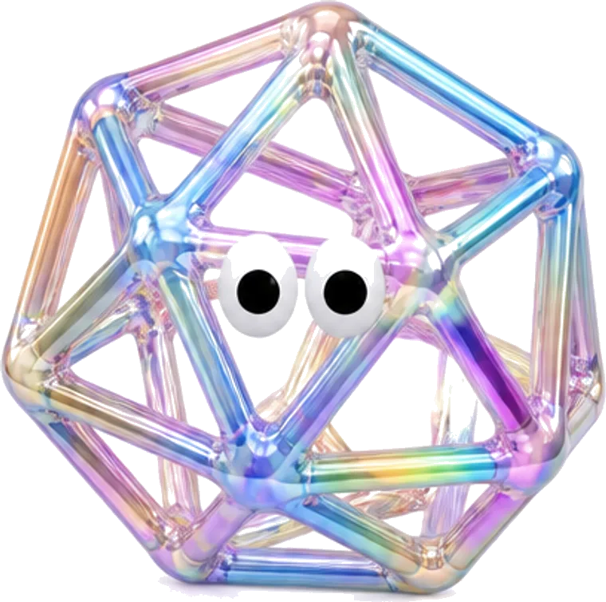

最滴塗料メーカー

PRODUCT(商品)
-
時が経つほど、価値が分かる。
AOTO UPPER シリーズ
SOTOKABE TOP
（ソトカベトップ）
水性シリコン系外壁用上塗り塗料
高耐候・低汚染・防藻 -
夏の屋根を、少し涼しく。
AOTO UPPER シリーズ
YANE TOP
（ヤネトップ）
遮熱型フッ素系屋根用上塗り塗料
遮熱・高耐候・防錆
-
AOTO UNDER シリーズ
CATION BASE
（カチオンベース）
カチオン形エマルション系下塗り材
含浸性・高密着・耐水性 -
AOTO UNDER シリーズ
SURFACER BASE
（サーフェーサーベース）
1液水性シリコン樹脂サーフェーサー
下地調整・厚膜 -
外壁の動きに合わせて、フィラーが伸縮。
AOTO UNDER シリーズ
FILLER BASE
（フィラーベース）
可とう形改修塗材E
微弾性・目止め効果 -
サビを止めて、多用途に使える。
AOTO UNDER シリーズ
RUST BASE
（サビ止めベース）
2液速乾弱溶剤形変性エポキシ系サビ止め塗料
速乾
ABOUT(会社)
塗る人の一日を、短くしたい。
アオト塗料は1968年、東大阪の小さな調色場から始まりました。 以来ずっと、現場で塗る人の手元だけを見て製品を作っています。
よく伸びること。乾きが読めること。缶を開けた日と最後の日で色が変わらないこと。 カタログに載りにくいところにこそ、一日の疲れ方の差が出ます。
毎年の配合の見直しは、営業が現場で聞いてきた一言から始まります。 「重い」「垂れる」「臭う」。その三つを減らすことが、うちの開発の仕事です。
STRENGTH(強み)
-
01
調色は翌日出荷
自社の調色場で受けて、翌営業日に出します。色合わせの見本は、現物を送ってから決められます。
-
02
仕様書は無料で作る
下地と工程を聞けば、その現場用の仕様書を作ります。見積りに添えるところまでが仕事だと思っています。
-
03
在庫は関西2拠点
東大阪と姫路に在庫を置いています。午前の注文なら、その日のうちに出ます。
CONTACT
製品のこと、現場のこと。
どんな小さなことでもお聞きします。